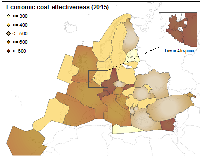

Reference area: EUROCONTROL area
Last update: 09-FEB-2017
Update rate: Annually
ANSPs cost-efficiency at Pan-European system shows that in 2015 the gate-to-gate unit economic costs increased by +4.2%, breaking a trend of 4 years of consecutive decreases. This increase is mainly due to higher ATFM delays unit costs in 2015 (+38.7%) while unit ATM/CNS provision costs remained fairly constant compared to 2014.
Economic cost-effectiveness by location (2015)

Economic gate-to-gate cost effectiveness (2015)
To be commented
PRR 2016 analyses performance in 2016 for all key performance areas, except for cost-efficiency, which analyses performance in 2015 as this is the latest year for which actual financial data are available. On the other hand, PRR 2016 also presents an outlook for 2016-2019 in terms of cost-efficiency trends.
The en-route cost-efficiency performance Pan-European system (39 States) improved in 2015 since real en-route unit costs decreased from 50.4 €2009 to 49.2 €2009 per service unit (TSU) which corresponds to a -2.4% reduction compared to 2014. This reduction is mainly due to the fact that traffic (+3.9%) rose faster than en-route ANS costs (+1.5%).
Over the 2009-2015 period, en-route unit costs reduced by -3.3% p.a. since traffic volumes rose by +3.1% p.a. while en-route costs remained fairly constant (-0.2% p.a.). This performance improvement should be seen in the light of (a) the cost-containment measures initiated in 2009-2010 in response of the traffic downturn arising from the economic recession, and (b) for SES States, the implementation of the Performance Scheme and the incentive mechanism embedded in the charging scheme which contributed to maintain a downward pressure on costs during RP1.
The outlook for 2016-2019 suggests that en-route unit costs are expected to decrease from 49.2 €2009 in 2015 to 46.1 €2009 in 2019, representing a decrease of -1.6% p.a. on average until 2019. Overall, at Pan-European level between 2009 and 2019, the trend in total en-route costs is planned to remain flat, while traffic is planned to increase by some +31%, implying substantial cost-efficiency improvements over this 10-years cycle.
European terminal ANS unit costs amount to 171.6 €2009 in 2015, which is the first year of application of the “determined costs” method for terminal ANS. In 2015, 30 States operated 36 Terminal Charging Zones (TCZs) which included a total of 173 airports.
Detailed analysis shows that there are wide differences in the level of unit costs at TCZ level ranging from 955 €2009 for Belgium Antwerp TCZ to 96 €2009 for Estonia TCZ. Caution is needed when interpreting these results since several factors on top of performance-related issues can affect the level of terminal unit costs in a specific TCZ. These factors include the number and size of aerodromes included in the charging zone, the use of different cost-allocation between en-route and terminal ANS, differences in traffic levels across TCZs and the scope of ANS provided.
The outlook for 2016-2019 suggests that total terminal ANS costs are planned to slightly decrease (i.e. on average by -0.7% p.a.), while TNSUs are foreseen to increase at an average rate of +1.4% per year. As a result, terminal ANS unit costs are expected to reduce by -2.1% p.a. between 2015 and 2019.
Detailed benchmarking analysis focusing on ANSPs cost-efficiency at Pan-European system shows that in 2015 the gate-to-gate unit economic costs increased by +4.2%, breaking a trend of 4 years of consecutive decreases. This increase is mainly due to higher ATFM delays unit costs in 2015 (+38.7%) while unit ATM/CNS provision costs remained fairly constant compared to 2014.